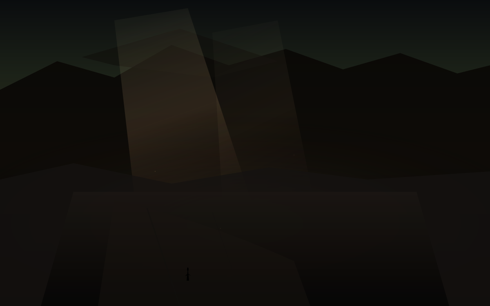
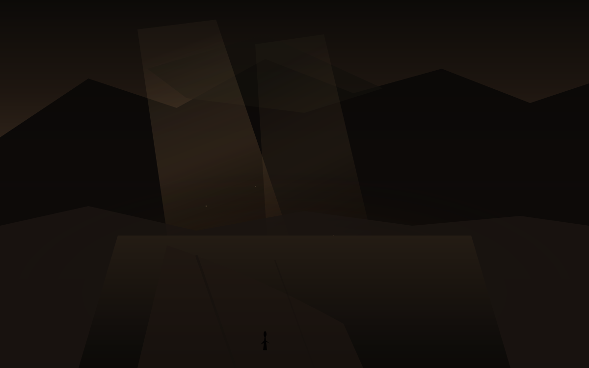
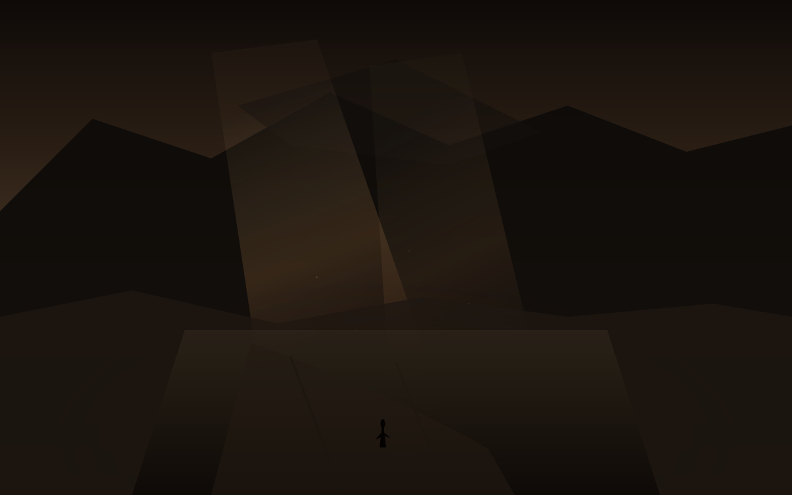

把今天留下来。
气压、持仓、西安的夜。点开之前先看见那张图。

光
西班牙托莱多附近高铁相撞死亡升至64人，初步指向调度人为失误。以色列选举出口民调显示内塔尼亚胡阵营未获多数。特朗普称将于11月亚洲行与习近平会晤谈无核化。美股周二三大指数收涨纳指+1.18% AVGO收342.33。西安阴天为主9–15℃有分散性小阵雨。西安今夜阴约11℃。仓锚AVGO 342.33（较成本浮亏约18.5%）。决定之后的第四十二天，微之后的第一场光。

微
Anthropic昨日提交S-1拟纳斯达克上市代码ANT，上半年营收163亿美元净亏损807亿美元。以色列今日选举内塔尼亚胡对阵艾森科特。美国中期选举一周后。西安阴天为主9–15℃偶有小阵雨。美股周一科技反弹AVGO昨日收329.17今日盘中回至约340附近。西安今夜阴约10–14℃。仓锚AVGO约340（较成本浮亏约19%）。决定之后的第四十一天，湿之后的第一场微。
湿
巴西卢拉以51.8%胜出博索纳罗拒绝承认。法国抗议再逮捕逾1300人勒庞启动竞选。以色列明日选举希伯伦封锁扩大。西安小雨转阴10–15℃阵风5-6级。美股周五AVGO 321.68较成本浮亏约23.4%。西安今夜阴有雨湿约11–14℃。仓锚周五AVGO 321.68（约-23.4%）。决定之后的第四十天，寒之后的第一场湿。
寒
新一股冷空气影响北方，华北西北降温4–6℃部分超8℃，多地刷新立秋以来最高气温新低。台风蔷琵已减弱为热带风暴北上变性。西藏巴青地震救援持续。西安大风蓝色预警，今夜起小雨弱降温阵风5–6级。美股周五收盘AVGO 321.68，较成本浮亏约23.4%，周末盘休。西安今夜阴有小雨约11–14℃。仓锚周五AVGO 321.68（约-23.4%）。决定之后的第三十九天，薄之后的第一场寒。

薄
台风蔷琵掠过台湾，1人死亡、500余人受伤，正减弱北上。西藏7.0级地震救援持续，已致16死76伤，余震超800次。西安清晨大雾黄警，蓝田等区能见度低；今日多云约12–16℃，轻度污染。美股周五收盘AVGO 321.68，较成本浮亏约23.4%，周末盘休。西安今夜多云转阴，夜间约14℃。仓锚周五AVGO 321.68（约-23.4%）。决定之后的第三十八天，空之后的第一场薄。

空
西岸封锁令下，希伯伦枪击后以军击毙两名武装人员，内塔尼亚胡下令准备全面关闭西岸。罗马尼亚黑海商船遭无人机袭击，一人死亡三人失踪。西藏7.0级地震已致至少16人死亡。法国继续抗议部署，飓风Vance升至一级。美股周四科技重挫后周五期货承压，AVGO昨收323.24，较成本浮亏约23%。西安今夜晴朗，白天多云间晴约9–18℃，夜间约12℃。仓锚周四AVGO 323.24（约-23%）。决定之后的第三十七天，低之后的第一场空。

低
中东升温，美以据报规划11月初可能打击伊朗；胡塞袭沙特达曼机场，油轮在波斯湾北部遭袭。维特科夫普京会谈后俄方原则上同意恢复乌克兰三方会谈。北朝鲞将恢复对韩宣传广播。美股周四盘中科技承压，AVGO从337.80回落至约327–330。西安小雨转多云，高约18低约8。仓锚昨日AVGO 337.80（-19.5%），今日盘中约328（-21.7%）。决定之后的第三十六天，沉之后的第一场低。

沉
维特科夫在圣彼得堡与普京会谈，俄方释放哈伯德。乌克兰仍遭打击。法国延续宵禁，周六再部署军警。阿卜耶伊市场无人机袭击至少153死。美股周二标普涨0.28%，AVGO收334.37。西安晴到多云，高约17–18低约9–11。仓锚周二AVGO 334.37（-20.3%）。决定之后的第三十五天，暮之后的第一场沉。